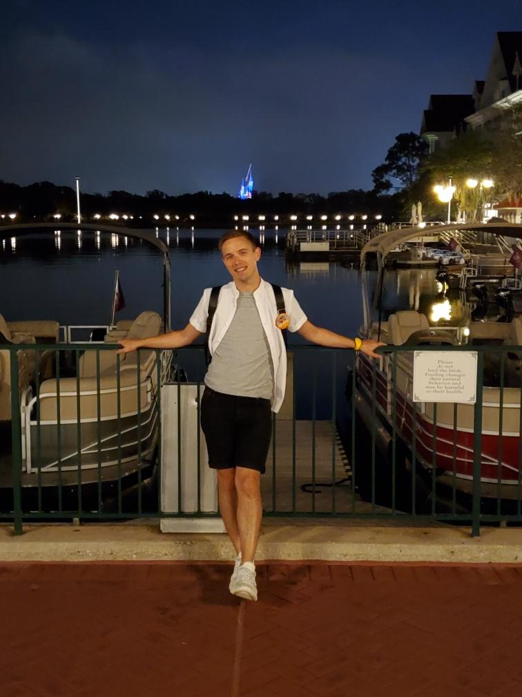

I'm a 28 year old Portlander who is looking to challenge myself by diving into something I never have before: Programming. I've been an employee of one of Portland's largest tech companies over the years, though from the people and office management perspective. Attending Epicodus so I can challenge myself with learning an entirely new and foreign set of skill sets is something I've been excited to start this program for quite some time!
While I was born in Portland, I moved around the Pacific Northewst frequently while growing up, which has now transitioned into a love of travel and new environments. I used to consider myself another Portland who needs our generally-overcast skies and bouts of rain, but I've found that I might prefer to move somewhere much sunnier. I'm confident that the skills I'll be learning over the next few months will prove to be useful tools in my future endeavors.
I live in Portland's CEID neighborhod with my partner and two animals: A dog and a cat. My cat prefers his privacy, but I'm happy to show off my other furry friend: